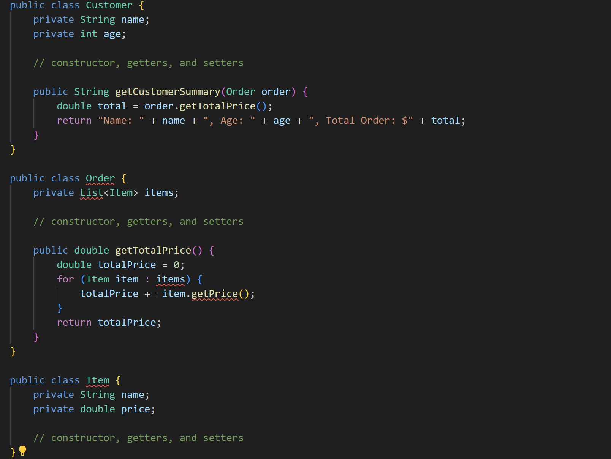
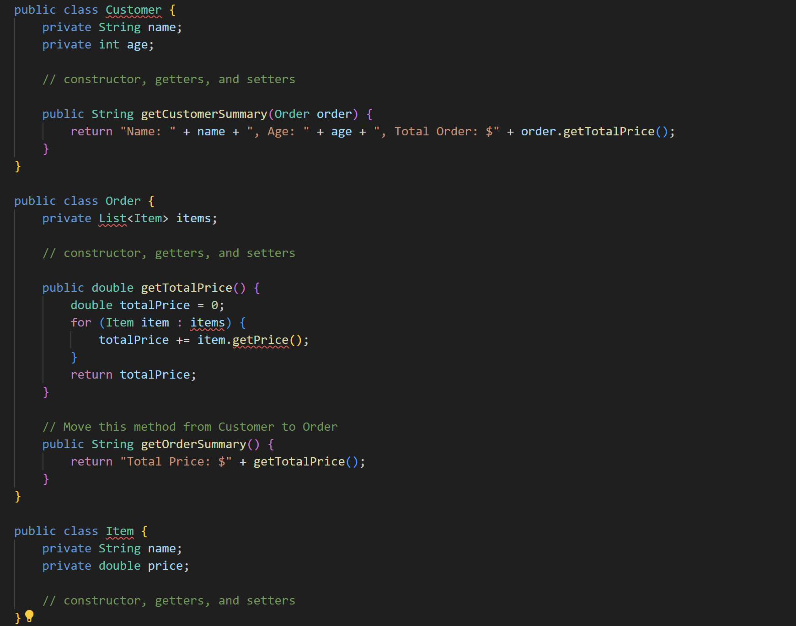

Contoh Code :
Before :

Pada contoh di atas, metode getCustomerSummary() di kelas Customer sangat bergantung pada objek Order, bahkan menggunakan metode getTotalPrice() dari objek Order. Ini menunjukkan adanya "feature envy" di mana seharusnya perhitungan total harga ada di kelas Order.
After :

Pada kode yang diperbaiki, metode getCustomerSummary() di kelas Customer sekarang hanya memanggil metode getTotalPrice() dari objek Order. Sedangkan metode getTotalPrice() telah dipindahkan dari Customer ke Order. Ini menghilangkan "feature envy" dan membuat struktur kode lebih bersih dan sesuai dengan prinsip-prinsip pemrograman berorientasi objek.